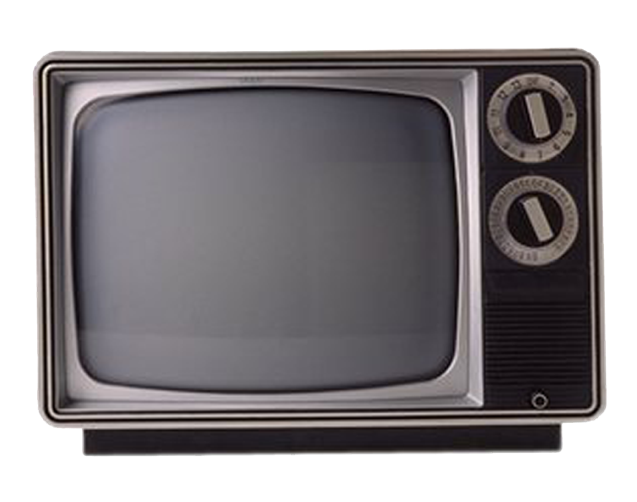
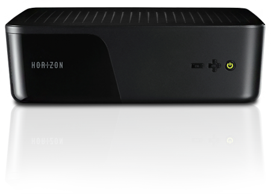
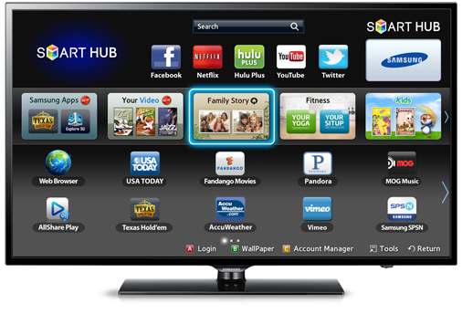
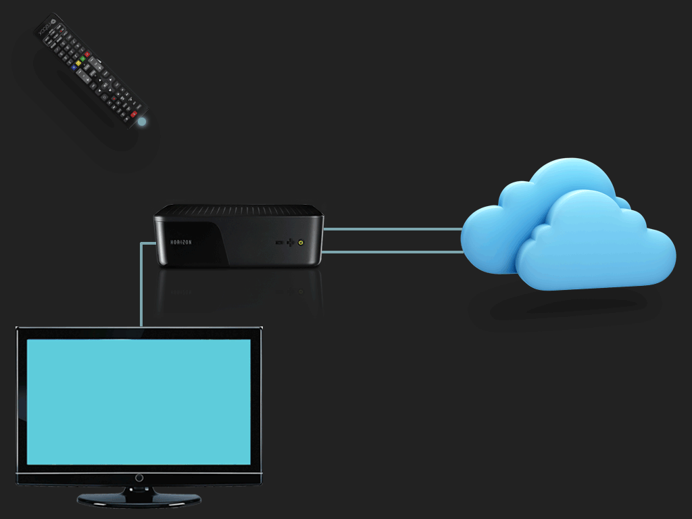
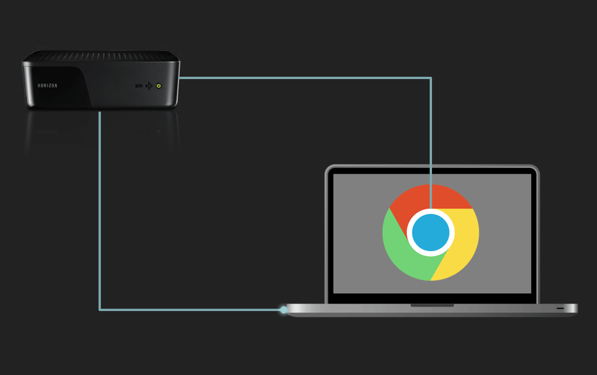
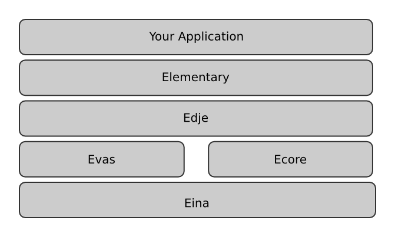
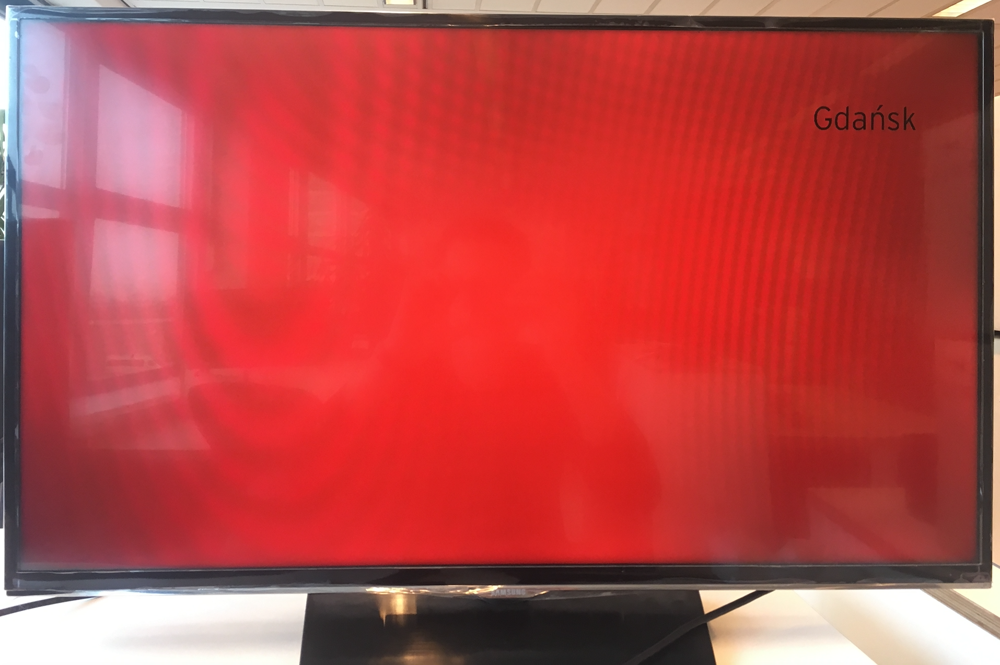
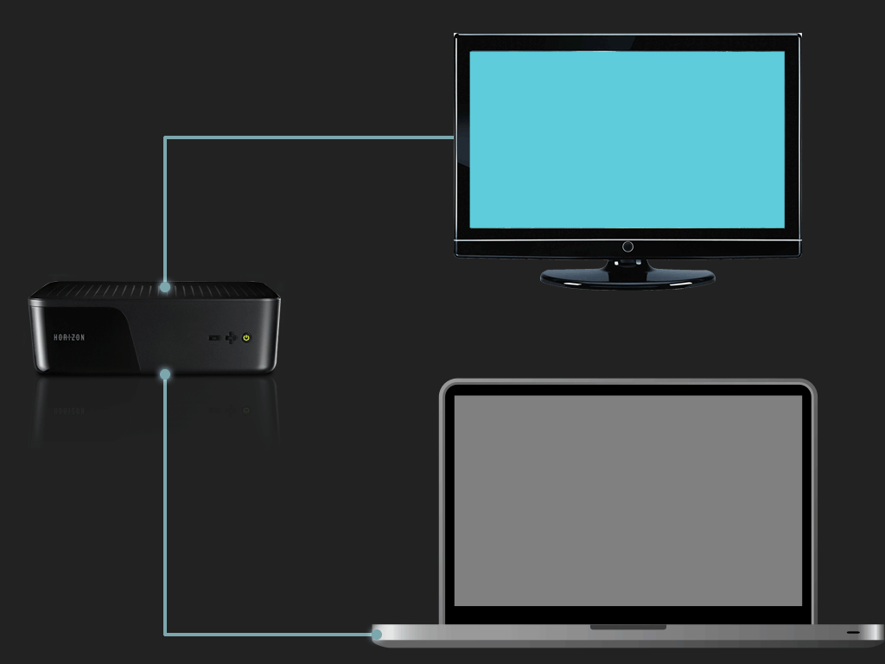

(r)Evolution of set-top boxes UI
21/23, EPAM Systems
What is STB?



What is (UI technically) STB?
- render UI
- react on keys (RCU, mobile device, ...)
A long time ago in a galaxy far, far away...
Typed way
- Java / C / C++ / ...
- unity
- OpenGL ES (OpenGL for Embedded Systems)
- Ease TV
- ...
Browser
- Metrological: Qt Browser
- Igalia: WPE
Qt Browser
- WebKit under the hood
- remote web inspector
- Nokia Qt framework
- last release in 2013
- not "web-friendly"
- Browser + UI = ~200mb RAM
WPE
- WebKit fork
- remote web inspector
- last commit 3 days ago
- more "web-friendly"
Browser UI evolution
Typical dev environment
Lessons we've learned
- workarounds are the must 😿
- redux store could be slow
- memory leaks ARE important
- how WebKit JSC works
Back to basics
2-way rendering
Present and future
efl
efl
Text with background
Text with background
const Node = require('shared/Node');
const bg = new Node({ id: 'bg', width: 1920, height: 1080 });
bg.setBackgroundColorWithOpacity({ r: 255, g: 0, b: 0, a: 255 });
bg.setVisible(true);
const textBg = new Node({ parent: bg, width: 800, height: 800, id: 'textBg' });
const textBlack = new Node({ parent: textBg, width: 800, height: 80, id: 'textBlack' });
textBlack.setLeft(150);
textBlack.setTop(150);
textBlack.setText('Gdańsk');
textBlack.setFontFamily('InterstatePro');
textBlack.setFontSize(60);
textBlack.setFontColorWithOpacity({ r: 0, g: 0, b: 0, a: 255 });
Typical dev environment
Present and future
- 3rd party applications
- Cloud gaming
Thanks